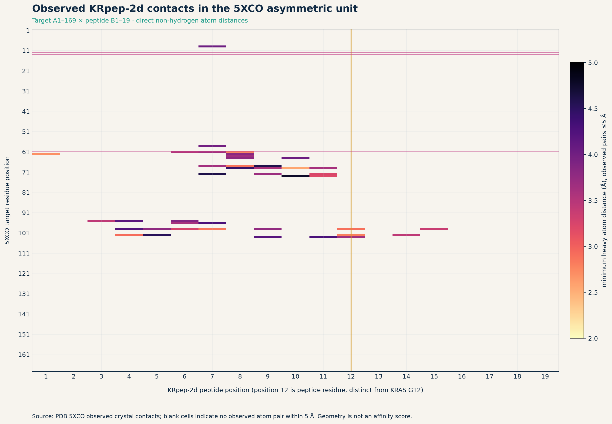
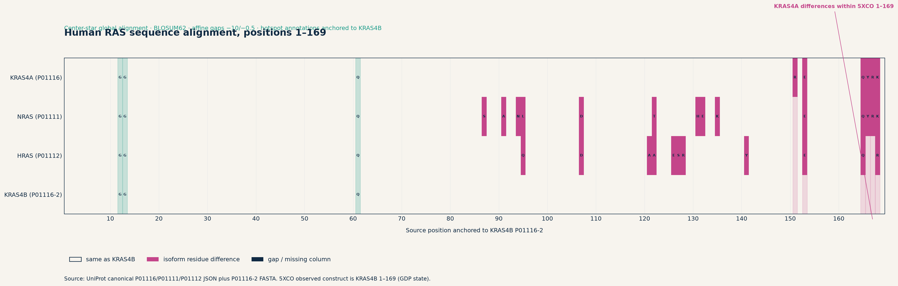
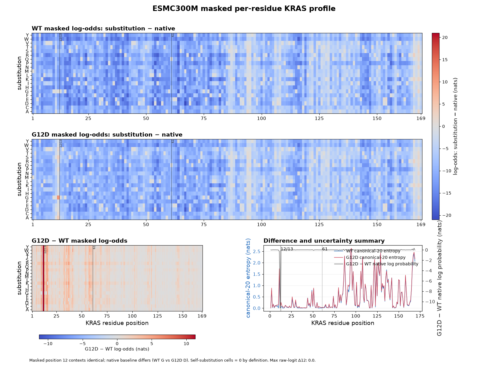
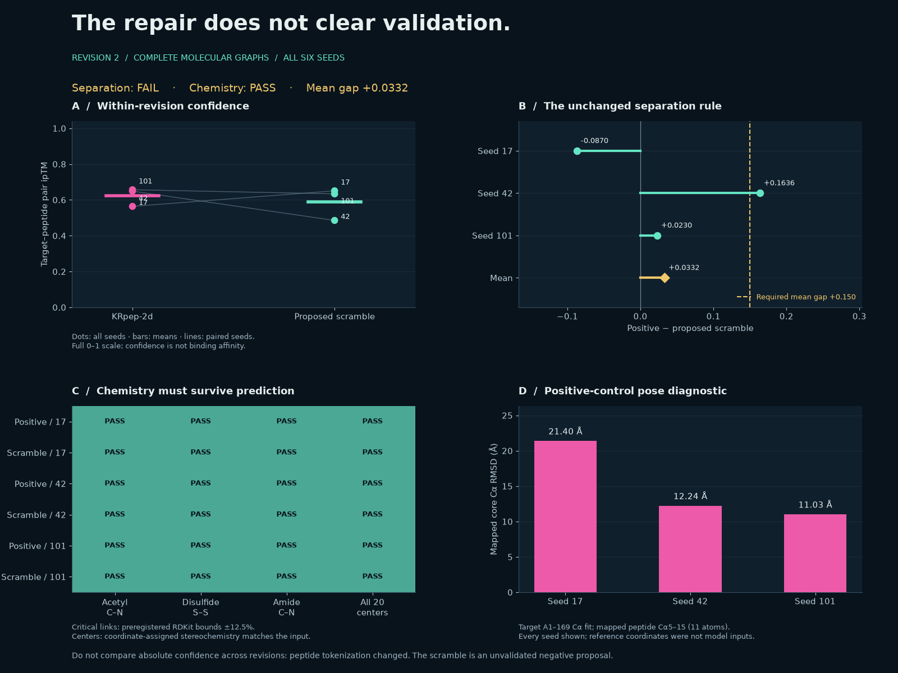
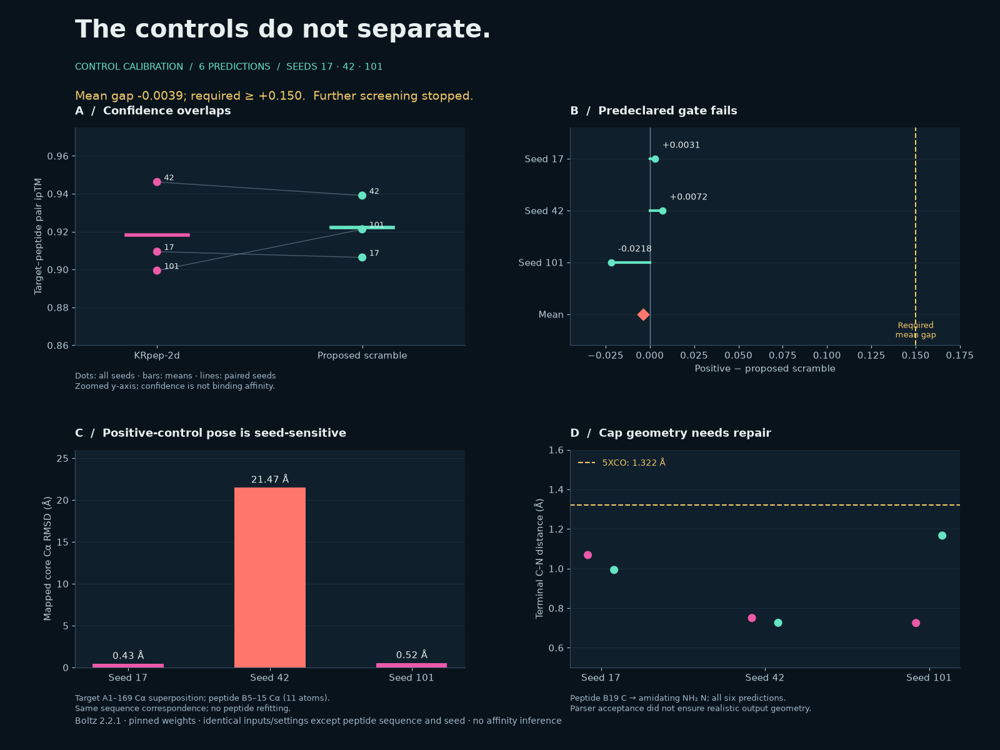
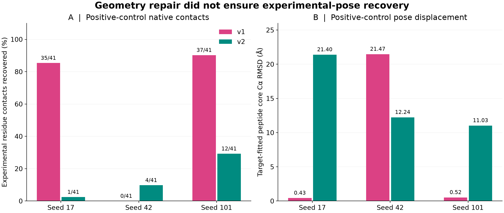
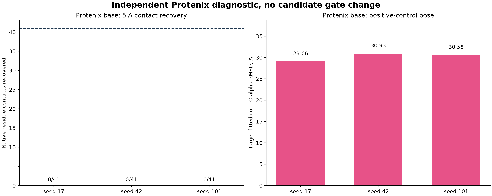

Chemistry repaired. Selection still fails.
Explore 12 Boltz control predictions and 6 Protenix diagnostics against the experimental KRpep-2d structure. All seeds retained; no novel binder selected.
15 September 2026
Can this workflow support peptide selection?
The complete molecular graph repaired the measured bond and stereochemistry checks. Confidence separation and experimental-pose recovery remained inadequate to advance candidates.
Two peptide identities, sampled across three seeds and three protocols. These are model outputs, not biological replicates. The proposed scramble is not an experimentally established nonbinder.
12 Boltz + 6 Protenix
2 rejected generator pilots
Inspect the pose, not just the score.
5XCO · KRAS G12D + KRpep-2d
Experimental reference · no new design
Every seed. Both controls.
Compare confidence within one Boltz revision only. Protenix is an independent diagnostic. A dash means the metric is not applicable; no native-pose correspondence is assigned to the scramble.
| Model / representation | Control | Seed | Pair ipTM | Core RMSD Å | Contacts | Inspect |
|---|---|---|---|---|---|---|
| Boltz · revision 1 | KRpep-2d | 17 | 0.9094 | 0.43 | 35/41 | |
| Boltz · revision 1 | KRpep-2d | 42 | 0.9462 | 21.47 | 0/41 | |
| Boltz · revision 1 | KRpep-2d | 101 | 0.8994 | 0.52 | 37/41 | |
| Boltz · revision 1 | Proposed scramble | 17 | 0.9064 | — | — | |
| Boltz · revision 1 | Proposed scramble | 42 | 0.9391 | — | — | |
| Boltz · revision 1 | Proposed scramble | 101 | 0.9213 | — | — | |
| Boltz · revision 2 | KRpep-2d | 17 | 0.5640 | 21.40 | 1/41 | |
| Boltz · revision 2 | KRpep-2d | 42 | 0.6490 | 12.24 | 4/41 | |
| Boltz · revision 2 | KRpep-2d | 101 | 0.6569 | 11.03 | 12/41 | |
| Boltz · revision 2 | Proposed scramble | 17 | 0.6509 | — | — | |
| Boltz · revision 2 | Proposed scramble | 42 | 0.4855 | — | — | |
| Boltz · revision 2 | Proposed scramble | 101 | 0.6338 | — | — | |
| Protenix · base diagnostic | KRpep-2d | 17 | — | 29.06 | 0/41 | |
| Protenix · base diagnostic | KRpep-2d | 42 | — | 30.93 | 0/41 | |
| Protenix · base diagnostic | KRpep-2d | 101 | — | 30.58 | 0/41 | |
| Protenix · base diagnostic | Proposed scramble | 17 | — | — | — | |
| Protenix · base diagnostic | Proposed scramble | 42 | — | — | — | |
| Protenix · base diagnostic | Proposed scramble | 101 | — | — | — |
Anchor every comparison in evidence.
LITERATURE ≠ NEW PREDICTIONSKRpep-2d · published SPR affinity
| KRAS | GDP KD | GTP KD |
|---|---|---|
| G12D | 8.9 nM | 11 nM |
| Wild type | 58 nM | 200 nM |
| WT / G12D | 6.52× | 18.18× |
Zoldonrasib G12D-selective
NCT06040541 · Recruiting · updated 3 Jun 2026
Daraxonrasib RAS multi-selective
NCT06625320 · Active, not recruiting · updated 2 Jun 2026
MRTX1133 Terminated
NCT05737706 · Formulation challenges · updated 6 Apr 2025
Read source and status details ↗Observed interface, measured directly.
5XCO COORDINATES
The isoform matters.
FOUR SEQUENCES · MAPPING VERIFIED
A sequence-model sanity check.
ESMC-300M · MASKED RESIDUES
Revision 2: the chemistry repair result
6 / 6 RUNS COMPLETEThe repaired method still cannot support candidate selection.
The second calibration failed. The candidate pipeline remains stopped under the declared protocol.
The same controls were represented as complete molecular graphs. Compare seeds within this revision; absolute confidence cannot be compared with revision 1 because tokenization changed.
Read the result and limitations ↗ · Frozen revision-2 protocol ↗
Every revision-2 seed
Download CSV ↗| Molecule | Seed | Pair ipTM | Critical links | All 20 centers | All bonds in bounds |
|---|---|---|---|---|---|
| KRpep-2d | 17 | 0.5640 | PASS | PASS | 100.0% |
| Proposed scramble | 17 | 0.6509 | PASS | PASS | 100.0% |
| KRpep-2d | 42 | 0.6490 | PASS | PASS | 100.0% |
| Proposed scramble | 42 | 0.4855 | PASS | PASS | 100.0% |
| KRpep-2d | 101 | 0.6569 | PASS | PASS | 100.0% |
| Proposed scramble | 101 | 0.6338 | PASS | PASS | 100.0% |
Revision 1: the recorded stop decision
6 / 6 RUNS COMPLETEThe scramble scores as highly as the positive control.
Mean pair-ipTM gap -0.0039; required ≥ +0.150. Positive wins 2/3 paired seeds, but the mean-gap criterion fails. Further screening is stopped.

Every control seed
Download CSV ↗| Molecule | Seed | Pair ipTM | Interface pLDDT | Cap C–N (Å) |
|---|---|---|---|---|
| KRpep-2d | 17 | 0.9094 | 94.77 | 1.068 |
| Proposed scramble | 17 | 0.9064 | 81.59 | 0.993 |
| KRpep-2d | 42 | 0.9462 | 95.14 | 0.750 |
| Proposed scramble | 42 | 0.9391 | 83.16 | 0.726 |
| KRpep-2d | 101 | 0.8994 | 94.39 | 0.725 |
| Proposed scramble | 101 | 0.9213 | 81.14 | 1.166 |
Two structures, zero accepted designs
15- and 13-residue backbone cycles retained GDP and closed geometrically. Both failed the built-in glycine-content and RMSD filters. The primary 60-design batch was not launched.
PGGTAPGLPLAGP
Rejected calibration outputs; no top design selected.
Selectivity and developability remain untested
The control gate stopped candidate screening, WT comparisons, developability triage and assay drafting. No biological selectivity or novel binding activity is established.
Read the evidence and decisions.
Clinical and cellular literature does not establish efficacy for this campaign. This campaign stopped at its predeclared control gate.
Recorded study: chemistry and control validation with a negative selection result. The original novel-binder objective remains unmet.
Inspect the study package.
RECORDED RESULTS
Protenix diagnostic addendum
NO GATE CHANGE| Attempt | Status | Model | CIFs | Note |
|---|---|---|---|---|
| Protenix-v2 | failed before prediction | protenix-v2 | 0 | Checkpoint unavailable (HTTP 403) |
| Protenix base default v1.0.0 | completed | protenix_base_default_v1.0.0 | 6 | No candidate gate change |
